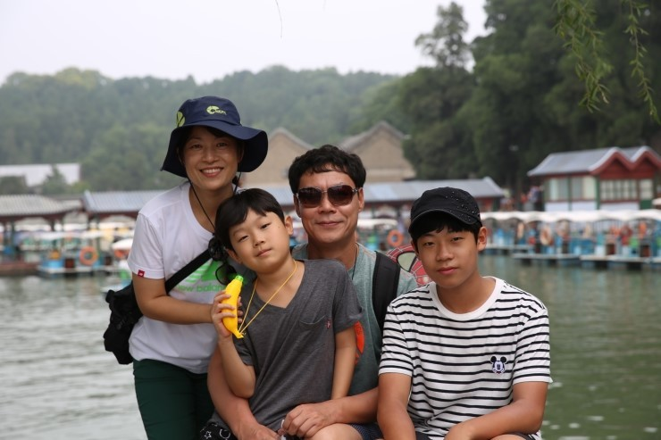
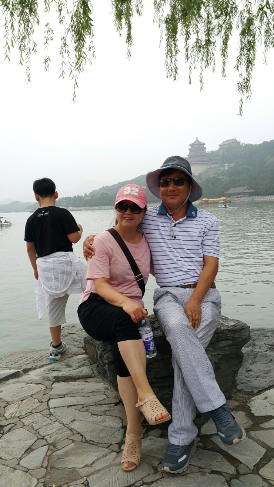
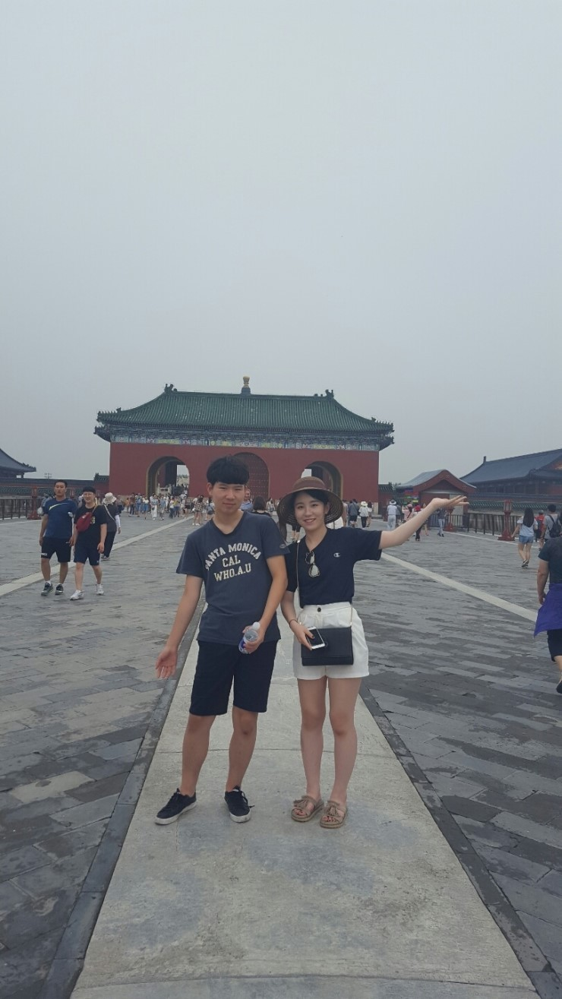
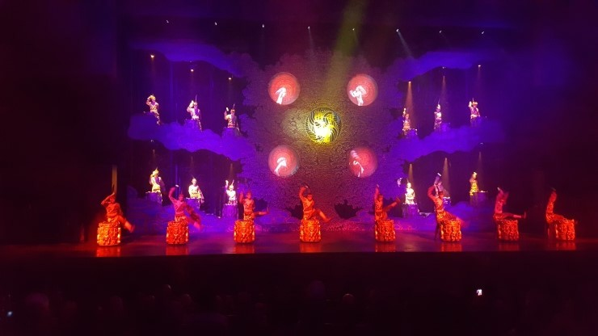

대광그룹 우수사원 및 우수품질분임조 가족동반 해외연수 !!
중국 북경 3박4일 여행이야기

중국 북경 해외연수 둘째날 이야기
자~ 오늘도 중국의 대륙을 느끼러 출발~!! 

이화원
이화원은 일시적인 피서와 요양 목적으로 건설된 황족 정원인데요~
특히 호수 너머로 바라보는 전통적인 중국 풍경이 매력적이었습니다.

인공 호수의 자연 풍광과 정자, 전각, 궁전, 사원, 교각 등의
건축물들이 결합하여 매력있고 중국적(?)인 묘한 분위기를 보여주었습니다.
간만에 느끼는 여유로움을 만끽하며~
다들  포토타임 !! ㅎㅎ
포토타임 !! ㅎㅎ 





천단공원
이화원에서 천단공원으로 왔어요~
'세계 유네스코 문화유산'인 천단공원은
황제가 하늘에 풍년을 빌며 제사를 지냈던 곳으로
규모가 어마어마 했습니다~
무려 자금성의 4배 ! 

못을 단하나도 사용하지않고 만든
원형탑 푸른유리로 기와를 놓은 신기한 건축물 기년전 방문


배고프다~배고프다~
한식먹고싶다~ ㅠ 
우리모두의 간절함을 한방에 해결해주는 점심시간 !
 한식당에 왔어요 ^^
한식당에 왔어요 ^^ 
자하문 (한식당)
간만에 불고기와 된장국 !
무엇보다 김치를 맛볼수있어서 한국에 온듯한 느낌이 들었던 식당
마지막 디저트 팥빙수까지

한국이 그리웠던 입맛에 딱맞았던 완벽했던곳~ 자하문 최고였어요
인력거투어
중국하면 빼놓을수 없는게~ 인력거투어죠
중국 전통가옥양식과 생활양식을 엿볼수 있는 스차하이마을의 고택을 구경 한 후
낭만적인 호숫가를 따라 마을 구석구석을
인력거를 타고 관광하며 이색적인 재미를 느낄수있었어요~
자전거가 생각보다 빨라
나름 ~ 스릴을 만끽할 수 있었어요 ㅎ
잠깐 휴식차~ 일정에도 없던 커피숍 방문 ㅎ
시원한 커피와 아이스크림을 맛있게 먹을수있었으나....
한국보다 커피가격의 두배에 다다랐다는....
금명왕조쇼
금명왕조쇼는 중국 3대공연중에 하나로 초대형 뮤지컬공연
(ㅋㅋ 역시나 이 공연도 S석에서 VIP로 관람하는 영광을 누림~~)
최정상급 감독과 200여명의 배우, 그리고 화려한 조명과 무대미술 !
안봤으면 후회할만한 거대하고 웅장한 공연~!!
특히 자연재해씬은 실제로 무대에 어마어마한 물이 쏟아져 내려와 장관을 이루었어요~

사천요리 (사우스뷰티)
고급스러운 인테리어에 맛있고 화려한 코스요리를 즐길 수 있었던
중국의 대표적인 사천요리 전문점
사우스뷰티 !
우리모두는 사우스뷰티에서 매운맛이 일품인 사천요리의 진수를 느낄 수 있었습니다.
모두들 가족소개를 하며 화기애애한 분위기속에
사장님의 진심이 담긴 '혼자가 아닌 직원들과 함께해 행복하다'는 말씀을 전해들으며,
한번 더 감사하단 마음으로 음식을 더 맛있게 즐길수 있었습니다.

밥도 먹고~
날도 어두워지고~
ㅎㅎ
펍(파울라너맥주)에 왔어요~~!!
2일차 일정을 마치고 호텔로 돌아와
사장님과 함께 중국에서의 밤이 아쉬운 일행들은 호텔근처 독일맥주집 방문
건배~~ 건배~~
건배~~
현장에서 직접 양조해서 서빙해주는 차가운 파울라너 맥주!
병이나 캔으로 마시는 맥주보다 10배는 맛있었던…치킨 과 함께 술이 절로 들어갔답니다
과 함께 술이 절로 들어갔답니다
라이브무대까지 볼 수 있어 더없이 좋았던 밤이었습니다. 
함정은 한국 생맥주에 비해 5배나 비쌌다는 사실… 
그래도 사장님은 직원들과의 시간이 소중하기에 ㅎ
다음날에도 또 직원들과 함께 방문 하셨지만요